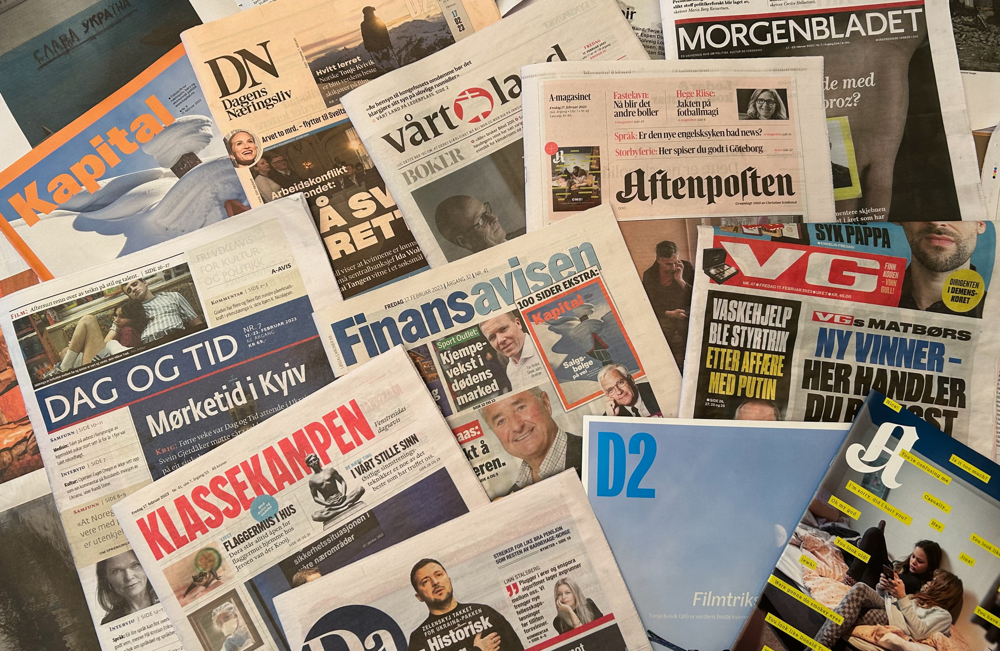

Investigative Journalist | Reporter | Photojournalist
Email: malitabatjokosela@gmail.com
Phone: +266 53672026
Location: Maseru, Lesotho
Investigative journalism plays a vital role in holding institutions accountable and exposing corruption within society. Unlike routine reporting, investigative journalism requires patience, research, and careful verification of facts.
Through interviews, documentation, and analysis of evidence, investigative reporters reveal important issues that affect communities and governments.
By uncovering hidden truths and sharing them with the public, journalists help strengthen democracy and encourage transparency.
Grassroots communities play a powerful role in shaping the development of a nation. Local people often work together to address social challenges and improve their communities.
Community initiatives such as education programs, local development projects, and volunteer activities contribute significantly to national progress.
These efforts show how collaboration and leadership at the local level can produce long-lasting social change.
Technology has dramatically changed how people access and consume news. Digital platforms allow journalists to publish stories instantly and reach audiences worldwide.
Social media platforms such as Facebook and Instagram have become important channels for sharing news and engaging with readers.
Although digital media brings challenges like misinformation, it also creates new opportunities for multimedia storytelling and global communication.

I am a professional journalist passionate about uncovering stories that matter and giving a voice to issues affecting communities.
My work focuses on investigative reporting, politics, social issues, and community development. Through journalism I aim to promote transparency and accountability in society.
As media continues to evolve, I continue developing skills in digital journalism, multimedia storytelling, and photojournalism to reach wider audiences.